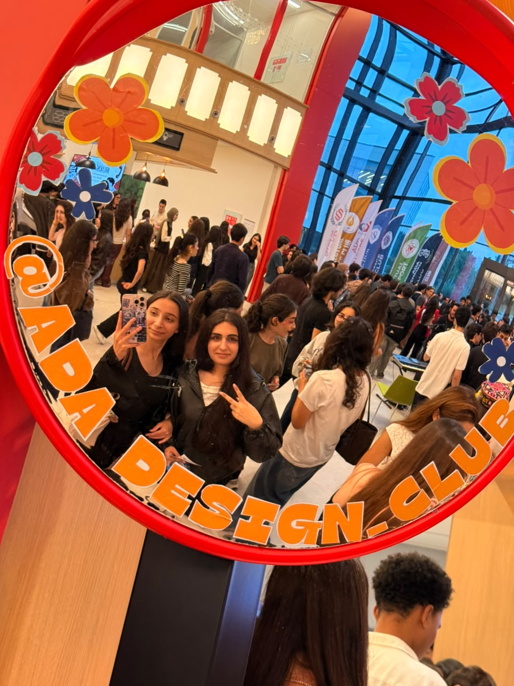
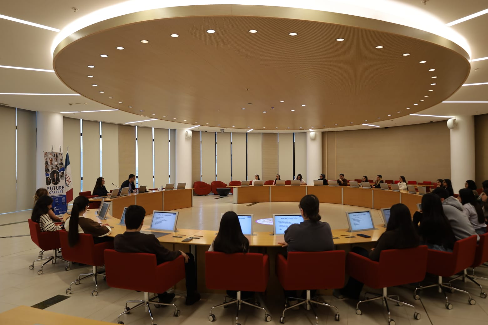
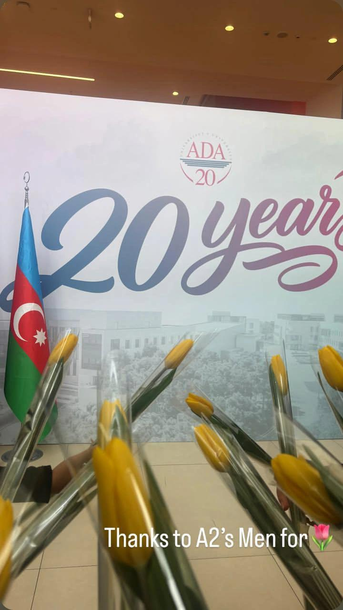
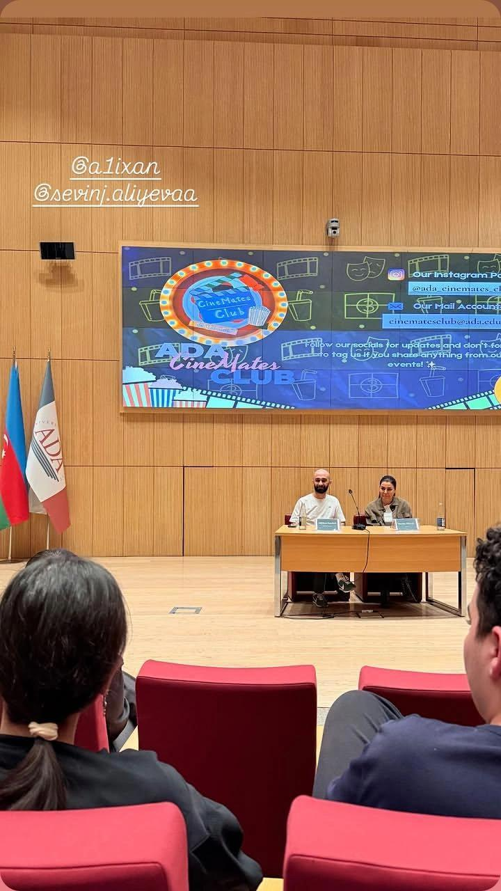
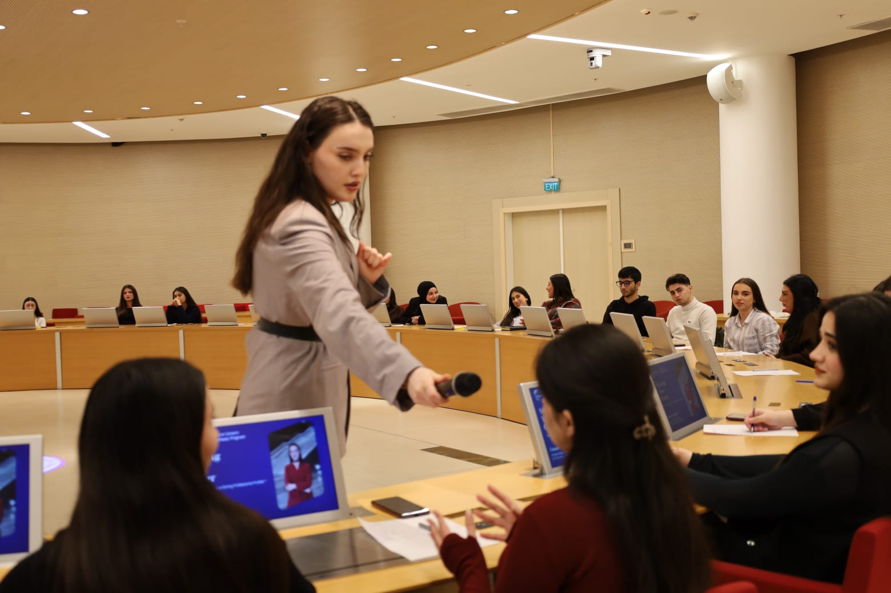

CAMPUS MOMENTS
University Life & Memories.
A few snapshots of the people, conversations, and experiences that make my university journey meaningful.





CAMPUS MOMENTS
A few snapshots of the people, conversations, and experiences that make my university journey meaningful.




